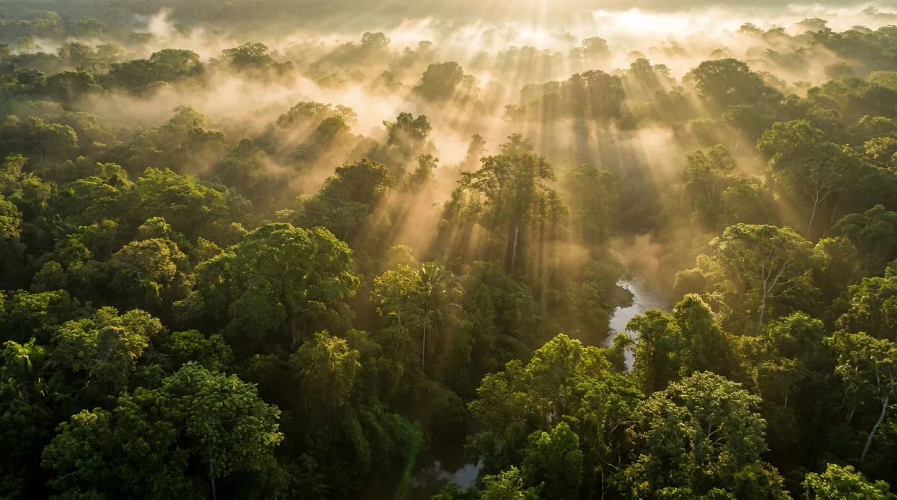
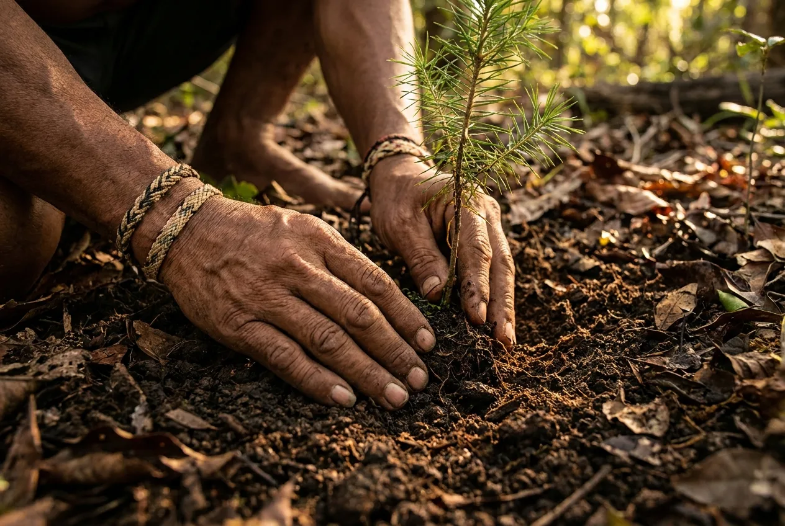
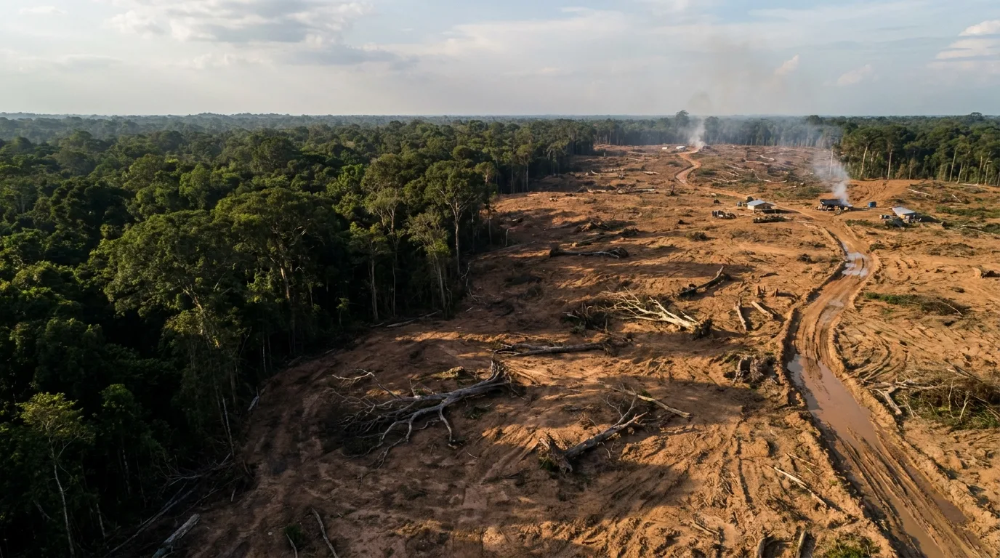
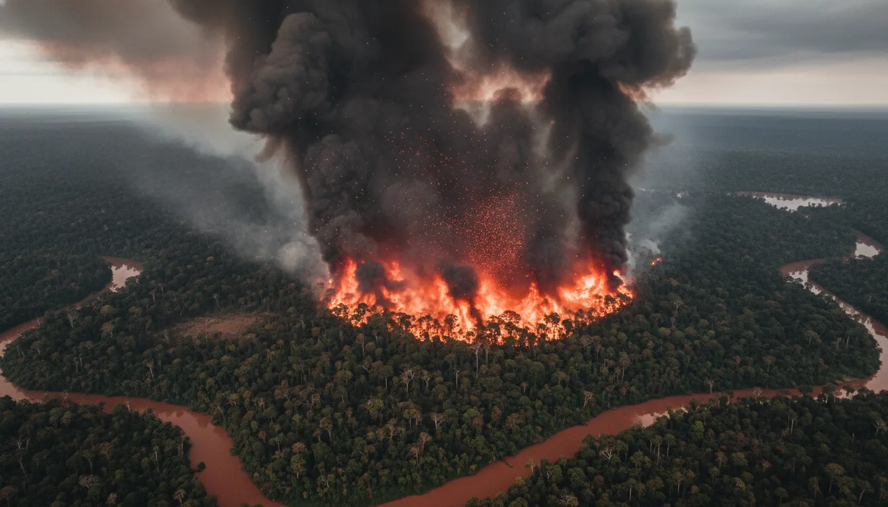
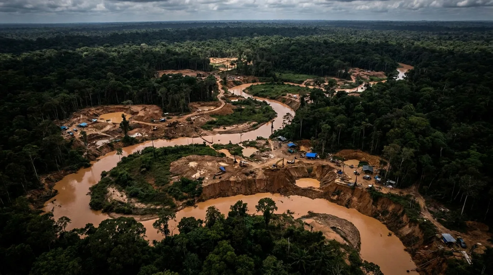
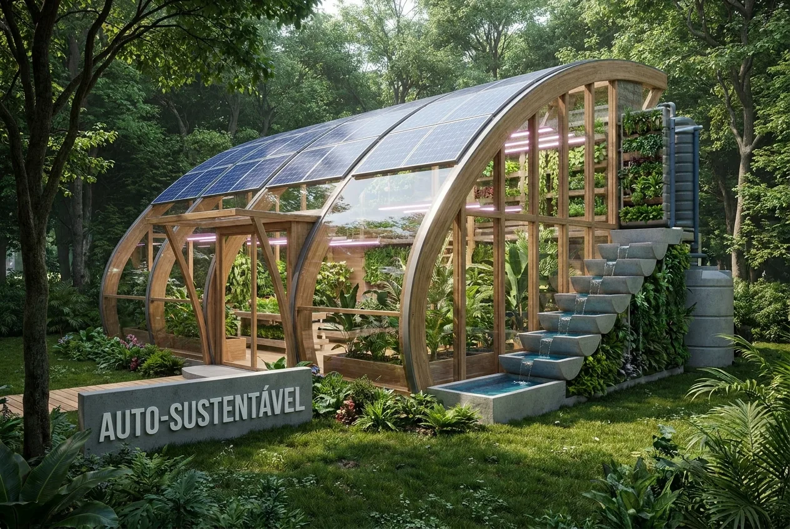

O Coração do Mundo em Suas Mãos
Com mais de 5 milhões de km², a Amazônia abriga a maior biodiversidade do planeta e regula o clima global. Um santuário vital que exige nossa proteção imediata.
Biodiversidade Incomparável
A vida pulsa em cada centímetro da floresta, abrigando espécies que não existem em nenhum outro lugar da Terra.
Fauna Amazônica
Lar de milhares de espécies de aves, mamíferos e insetos. Das onças-pintadas aos botos-cor-de-rosa, a fauna é a alma do ecossistema.
- check_circle Mais de 1.300 espécies de aves
- check_circle 427 espécies de mamíferos
Flora Amazônica
A farmácia do mundo. Com mais de 40 mil espécies de plantas, a flora provê sustento, oxigênio e curas medicinais ancestrais.
- check_circle 16.000 espécies de árvores
- check_circle 20% do oxigênio produzido por florestas

"A floresta é viva e cada semente plantada é uma esperança para as futuras gerações."
Ameaças à Floresta
O equilíbrio delicado da Amazônia está sob ataque constante, com consequências devastadoras para o aquecimento global.

Desmatamento
A perda da cobertura vegetal destrói habitats e libera bilhões de toneladas de carbono armazenado na atmosfera.

Queimadas
Utilizadas para limpeza de terreno, as queimadas descontroladas poluem o ar e empobrecem o solo amazônico. Em 2024, os focos de incêndio na Amazônia aumentaram drasticamente, liberando milhões de toneladas de CO2.
Impacto Climático
As queimadas destroem a biodiversidade e alteram o ciclo de chuvas em todo o continente.

Garimpo Ilegal
A mineração ilegal contamina rios com mercúrio, ameaçando a saúde de comunidades indígenas e a vida aquática.
Como Proteger a Amazônia?
O futuro exige uma abordagem multidisciplinar que una tecnologia, vigilância e consciência ecológica.
Fiscalização Rigorosa
Combate direto a crimes ambientais através de órgãos governamentais e satélites.
Reflorestamento Ativo
Recuperação de áreas degradadas com espécies nativas para restaurar corredores ecológicos.
Tecnologia e Monitoramento
Uso de IA e sensores para prever focos de desmatamento em tempo real.

Sua consciência é a semente do amanhã
Receba atualizações semanais sobre o estado de conservação da Amazônia e saiba como ajudar projetos locais.
Formulário de Respostas